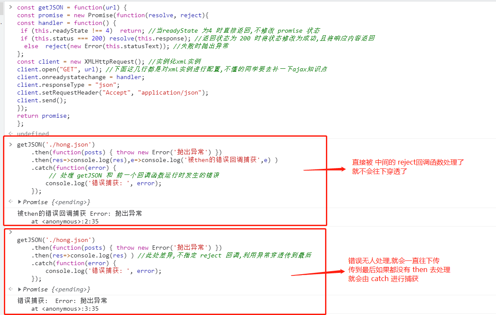
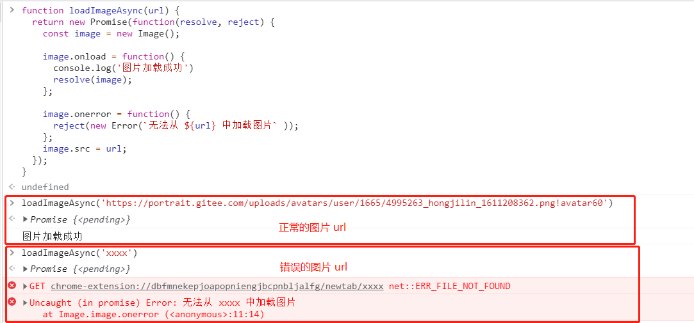
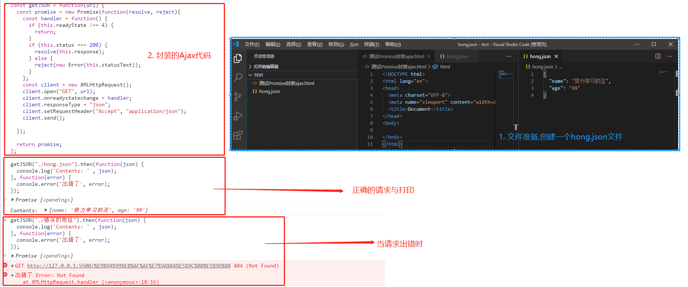
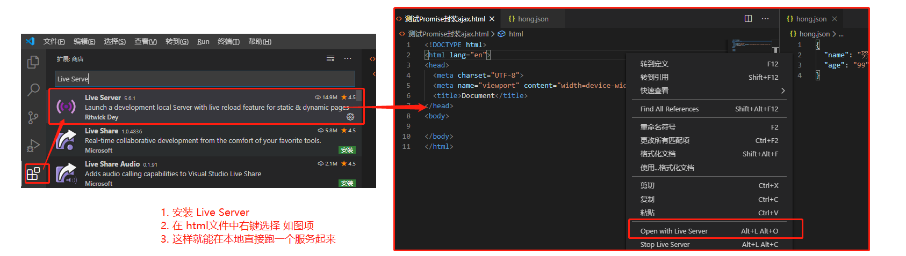
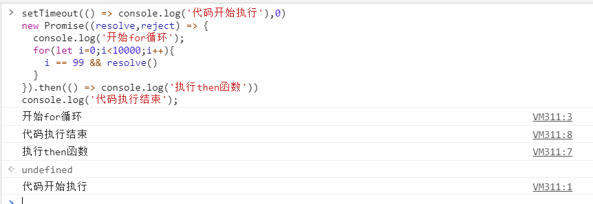
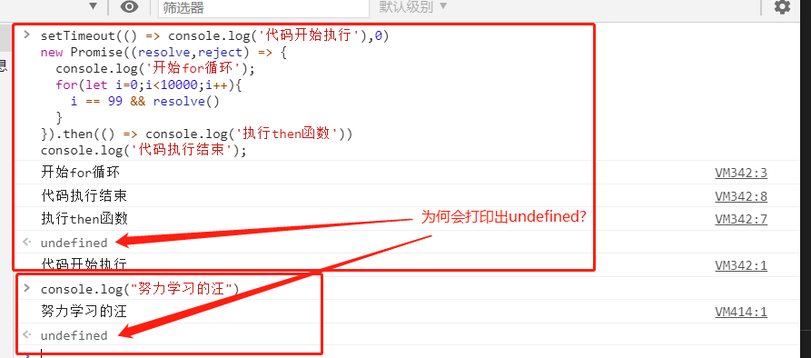
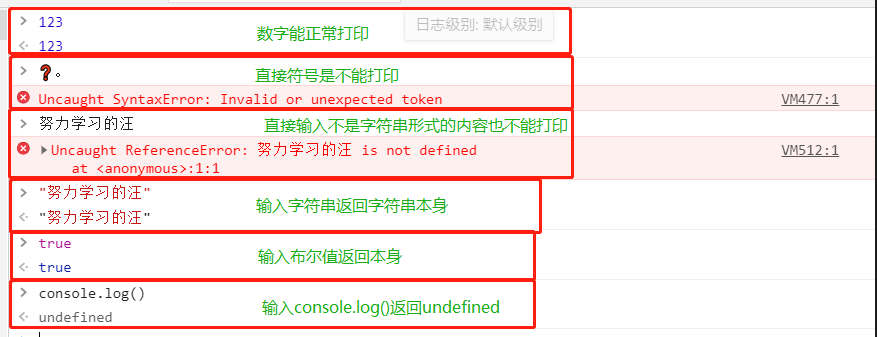
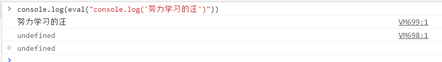

Promise学习笔记
#目录
[TOC]
一、Promise的理解与使用
1、概念:
Promise是
异步编程的一种解决方案，比传统的解决方案——回调函数和事件——更合理和更强大。所谓Promise，简单说就是一个容器，里面保存着某个未来才会结束的事件（通常是一个异步操作）的结果。通俗讲，
Promise是一个许诺、承诺,是对未来事情的承诺，承诺不一定能完成，但是无论是否能完成都会有一个结果。
- Pending 正在做。。。
- Resolved 完成这个承诺
- Rejected 这个承诺没有完成，失败了
Promise 用来预定一个不一定能完成的任务，要么成功，要么失败
在具体的程序中具体的体现，通常用来封装一个异步任务，提供承诺结果
Promise 是异步编程的一种解决方案，
主要用来解决回调地狱的问题，可以有效的减少回调嵌套。真正解决需要配合async/await2、特点:
(1)对象的状态不受外界影响。Promise对象代表一个异步操作，有三种状态：Pending（进行中）、Resolved（已完成，又称Fulfilled）和Rejected（已失败）。只有异步操作的结果，可以决定当前是哪一种状态，任何其他操作都无法改变这个状态。
(2)一旦状态改变，就不会再变，任何时候都可以得到这个结果。Promise对象的状态改变，只有两种可能：从Pending变为Resolved和从Pending变为Rejected。只要这两种情况发生，状态就凝固了，不会再变了，会一直保持这个结果。就算改变已经发生了，你再对Promise对象添加回调函数，也会立即得到这个结果。
3、缺点:
(1)无法取消Promise，一旦新建它就会立即执行，无法中途取消。和一般的对象不一样，无需调用。
(2)如果不设置回调函数，Promise内部抛出的错误，不会反应到外部。
(3)当处于Pending状态时，无法得知目前进展到哪一个阶段（刚刚开始还是即将完成）
1、Promise是什么?
Ⅰ-理解
- 抽象表达:
1) Promise 是一门新的技术(ES6 规范)
2)Promise 是 JS 中
进行异步编程的新解决方案 备注：旧方案是单纯使用回调函数
- 具体表达:
从语法上来说: Promise 是一个
构造函数从功能上来说: promise 对象用来封装一个异步操作并可以获取其成功/ 失败的结果值
Ⅱ-promise 的状态
a) promise 的状态
实例对象中的一个属性 『PromiseState』
- pending 未决定的
- resolved / fullfilled 成功
- rejected 失败
b) promise 的状态改变
pending 变为 resolved
pending 变为 rejected
说明: 只有这 2 种, 且一个 promise 对象只能改变一次；
无论变为成功还是失败, 都会有一个结果数据 ；
成功的结果数据一般称为 value, 失败的结果数据一般称为 reason。
Ⅲ-promise的基本流程

Ⅳ-promise的基本使用
1.使用 promise 封装基于定时器的异步
<script >
function doDelay(time) {
// 1. 创建 promise 对象(pending 状态), 指定执行器函数
return new Promise((resolve, reject) => {
// 2. 在执行器函数中启动异步任务
console.log('启动异步任务')
setTimeout(() => {
console.log('延迟任务开始执行...')
const time = Date.now() // 假设: 时间为奇数代表成功, 为偶数代表失败
if (time % 2 === 1) { // 成功了
// 3.1. 如果成功了, 调用 resolve()并传入成功的 value
resolve('成功的数据 ' + time)
} else { // 失败了
// 3.2. 如果失败了, 调用 reject()并传入失败的 reason
reject('失败的数据 ' + time)
}
}, time)
})
}
const promise = doDelay(2000)
promise.then(// promise 指定成功或失败的回调函数来获取成功的 vlaue 或失败的 reason
value => {// 成功的回调函数 onResolved, 得到成功的 vlaue
console.log('成功的 value: ', value)
},
reason => { // 失败的回调函数 onRejected, 得到失败的 reason
console.log('失败的 reason: ', reason)
},
)
</script>
2.使用 promise 封装 ajax 异步请求
<script>
/**
* 封装一个函数 sendAJAX 发送 GET AJAX 请求
* 参数 URL
* 返回结果 Promise 对象
*/
function sendAJAX(url){
return new Promise((resolve, reject) => {
const xhr = new XMLHttpRequest();
xhr.responseType = 'json';
xhr.open("GET", url);
xhr.send();
//处理结果
xhr.onreadystatechange = function(){
if(xhr.readyState === 4){
//判断成功
if(xhr.status >= 200 && xhr.status < 300){
//成功的结果
resolve(xhr.response);
}else{
reject(xhr.status);
}
}
}
});
}
sendAJAX('https://api.apiopen.top/getJok')
.then(value => {
console.log(value);
}, reason => {
console.warn(reason);
});
</script>
3.fs模块使用Promise
const fs = require('fs');
//回调函数 形式----------------------------------------------------
fs.readFile('./resource/content.txt', (err, data) => {
// 如果出错 则抛出错误
if(err) throw err;
//输出文件内容
console.log(data.toString());
});
//Promise 形式-----------------------------------------------------------
/**
* 封装一个函数 mineReadFile 读取文件内容
* 参数: path 文件路径
* 返回: promise 对象
*/
function mineReadFile(path){
return new Promise((resolve, reject) => {
//读取文件
require('fs').readFile(path, (err, data) =>{
//判断
if(err) reject(err);
//成功
resolve(data);
});
});
}
mineReadFile('./resource/content.txt')
.then(value=>{
//输出文件内容
console.log(value.toString());
}, reason=>{
console.log(reason);
});
4.异常穿透
可以在每个then()的第二个回调函数中进行err处理,也可以利用异常穿透特性,到最后用
catch去承接统一处理,两者一起用时,前者会生效(因为err已经将其处理,就不会再往下穿透)而走不到后面的catch在每个.then()中我可以将数据再次传出给下一个then()
mineReadFile('./11.txt').then(result=>{
console.log(result.toString())
return result
},err=>console.log(err))
.then(data=>console.log(data,"2222222"))
.catch(err=>console.log("这是catch的"))
5.util.promisify方法
可以将函数直接变成promise的封装方式,不用再去手动封装
//引入 util 模块
const util = require('util');
//引入 fs 模块
const fs = require('fs');
//返回一个新的函数
let mineReadFile = util.promisify(fs.readFile);
mineReadFile('./resource/content.txt').then(value => {
console.log(value.toString());
});
2、为什么要用Promise?
Ⅰ-指定回调函数的方式更加灵活
- 旧的: 必须在启动异步任务前指定
- promise: 启动异步任务 => 返回promie对象 => 给promise对象绑定回调函数(甚至可以在异步任务结束后指定多个)
Ⅱ-支持链式调用, 可以解决回调地狱问题
1、什么是回调地狱
回调函数嵌套调用, 外部回调函数异步执行的结果是嵌套的回调执行的条件

2、回调地狱的缺点?
不便于阅读 不便于异常处理
3、解决方案?
promise
链式调用,用来解决回调地狱问题，但是
只是简单的改变格式，并没有彻底解决上面的问题真正要解决上述问题，一定要利用promise再加上await和async关键字实现异步传同步。doSomething().then(function(result) { return doSomethingElse(result) }) .then(function(newResult) { return doThirdThing(newResult) }) .then(function(finalResult) { console.log('Got the final result: ' + finalResult) }) .catch(failureCallback)
4、终极解决方案?
promise +async/await
async function request() { try { const result = await doSomething() const newResult = await doSomethingElse(result) const finalResult = await doThirdThing(newResult) console.log('Got the final result: ' + finalResult) } catch (error) { failureCallback(error) } }
3、Promise中的常用 API 概述
此处列举几个最常用的API的概述,如果想看详细描述的可以继续往下看下方的 Promise方法的具体使用 描述
Ⅰ- Promise 构造函数: Promise (excutor)
(1)
executor函数: 执行器 (resolve, reject) => {}(2)
resolve函数: 内部定义成功时我们调用的函数 value => {}(3)
reject函数: 内部定义失败时我们调用的函数 reason => {}说明:
executor会在 Promise 内部立即同步调用,异步操作在执行器中执行,换话说Promise支持同步也支持异步操作
Ⅱ-Promise.prototype.then 方法: (onResolved, onRejected) =>
(1)
onResolved函数: 成功的回调函数 (value) => {}(2)
onRejected函数: 失败的回调函数 (reason) => {}说明: 指定用于得到成功 value 的成功回调和用于得到失败 reason 的失败回调 返回一个新的 promise 对象
Ⅲ-Promise.prototype.catch 方法: (onRejected) =>
(1) onRejected 函数: 失败的回调函数 (reason) => {}
说明: then()的语法糖, 相当于: then(undefined, onRejected)
(2) 异常穿透使用:当运行到最后,没被处理的所有异常错误都会进入这个方法的回调函数中
Ⅳ-Promise.resolve 方法: (value) =>
value: 成功的数据或 promise 对象说明: 返回一个成功/失败的 promise 对象,直接改变promise状态。
let p1 = Promise.resolve(521); //如果传入的参数为 非Promise类型的对象, 则返回的结果为成功的Promise对象 //如果传入的参数为 Promise 对象, 返回的结果为传入的Promise对象的返回结果，返回的值为传入的Promise对象的值。 let p2 = Promise.resolve(new Promise((resolve, reject) => { // resolve('OK'); reject('Error'); })); // console.log(p2); p2.catch(reason => { console.log(reason); })
Ⅴ-Promise.reject 方法: (reason) =>
reason: 失败的原因说明: 返回一个失败的 promise 对象,直接改变promise状态。
let p = Promise.reject(521); let p2 = Promise.reject('iloveyou'); //如果传入的参数为 非Promise类型的对象, 则返回的结果为失败的promise对象 //如果传入的参数为 Promise 对象, 返回的结果为"rejected"，且失败的值为传入的promise参数 let p3 = Promise.reject(new Promise((resolve, reject) => { resolve('OK'); })); console.log(p3);
Ⅵ-Promise.all 方法: (promises) =>
promises: 包含 n 个 promise 的数组说明: 返回一个新的 promise, 只有所有的promise都成功才成功, 只要有一个失败了就直接失败。成功的结果为所有Promise对象结果组成的数组，而失败的结果为第一个[根据传入参数的顺序]失败的对象的结果。
let p1 = new Promise((resolve, reject) => { resolve('成功'); }) let p2 = Promise.reject('错误错误错误'); let p3 = Promise.resolve('也是成功') const result = Promise.all([p1, p2, p3]); console.log(result);
Ⅶ-Promise.race 方法: (promises) =>
promises: 包含 n 个 promise 的数组说明: 返回一个新的 promise, 第一个完成的 promise 的结果状态就是最终的结果状态,
如p1延时,开启了异步,内部正常是同步进行,所以p2>p3>p1,结果是P2
let p1 = new Promise((resolve, reject) => { setTimeout(() => { resolve('OK'); }, 1000); }) let p2 = Promise.resolve('Success'); let p3 = Promise.resolve('Oh Yeah'); //调用 const result = Promise.race([p1, p2, p3]); console.log(result);
4、Promise的几个关键问题
Ⅰ-如何改变 promise 的状态?
(1) resolve(value): 如果当前是 pending 就会变为 resolved (fullfiled)
(2) reject(reason): 如果当前是 pending 就会变为 rejected
(3) 抛出异常: 如果当前是 pending 就会变为 rejected
Ⅱ-一个 promise 指定多个成功/失败回调函数, 都会调用吗?
当 promise
改变为对应状态时都会调用,改变状态后,多个回调函数都会调用,并不会自动停止let p = new Promise((resolve, reject) => { resolve('OK'); }); ///指定回调1 p.then(value => { console.log(value); }); //指定回调2 p.then(value => { alert(value); });
Ⅲ- 改变 promise 状态和指定回调函数谁先谁后?
(1) 都有可能, 正常情况下是先指定回调再改变状态, 但也可以先改状态再指定回调
①先指定回调再改变状态(
异步):先指定回调–> 再改变状态 –>改变状态后才进入异步队列执行回调函数 ② 先改状态再指定回调(
同步):改变状态 –>指定回调 ,并马上执行回调(2) 如何先改状态再
指定回调? –> 注意:指定并不是执行 ① 在执行器中直接调用 resolve()/reject() –>即,不使用定时器等方法,执行器内直接同步操作
② 延迟更长时间才调用 then() –>即,在
.then()这个方法外再包一层例如延时器这种方法(3) 什么时候才能得到数据?
① 如果先指定的回调, 那当状态发生改变时, 回调函数就会调用, 得到数据
② 如果先改变的状态, 那当指定回调时, 回调函数就会调用, 得到数据
let p = new Promise((resolve, reject) => { //异步写法,这样写会先指定回调,再改变状态 setTimeout(() => { resolve('OK'); }, 1000); //这是同步写法,这样写会先改变状态,再指定回调 resolve('OK'); }); p.then(value => { console.log(value); }, reason => { })(4) 个人理解–结合源码
源码中,promise的状态是通过一个
默认为padding的变量进行判断,所以当resolve/reject延时(异步导致当then加载时,状态还未修改)后。这时直接进行p.then()会发现,目前状态还是进行中,所以只是这样导致只有同步操作才能成功。所以promise将传入的回调函数拷贝到promise对象实例上,然后在resolve/reject的执行过程中再进行调用,达到异步的目的。具体代码实现看下方自定义promise。
Ⅳ-promise.then()返回的新 promise 的结果状态由什么决定?
(1) 简单表达: 由 then()指定的回调函数执行的结果决定
(2) 详细表达:
① 如果抛出异常, 新 promise 变为 rejected, reason 为抛出的异常
② 如果返回的是非 promise 的任意值, 新 promise 变为 resolved, value 为返回的值
③ 如果返回的是另一个新 promise, 此 promise 的结果就会成为新 promise 的结果
let p = new Promise((resolve, reject) => { resolve('ok'); }); //执行 then 方法 let result = p.then(value => { console.log(value); // 1. 抛出异常 ,变为 rejected // throw '出了问题'; // 2. 返回结果是非 Promise 类型的对象,新 promise 变为 resolved // return 521; // 3. 返回结果是 Promise 对象,此 promise 的结果就会成为新 promise 的结果 //return new Promise((resolve, reject) => { // resolve('success'); // reject('error'); }); }, reason => { console.warn(reason); });
Ⅴ- promise 如何串连多个操作任务?
(1) promise 的 then()返回一个新的 promise, 可以开成 then()的链式调用 。
(2) 通过 then 的链式调用串连多个同步/异步任务,这样就能用
then()将多个同步或异步操作串联成一个同步队列。<script> let p = new Promise((resolve, reject) => { setTimeout(() => { resolve('OK'); }, 1000); }); p.then(value => { return new Promise((resolve, reject) => { resolve("success"); }); }) .then(value => { console.log(value); }) .then(value => { console.log(value); }) </script> //输出结果： //success //undefined //分析：第二个then函数中应当返回一个promise对象，但是没有返回值，默认为undefined， //因此第三个回调函数输出一个undefined.
Ⅵ-promise 异常传透?
- 当使用 promise 的 then 链式调用时, 可以在最后指定失败的回调
- 前面任何操作出了异常, 都会传到最后失败的回调中处理
getJSON('./hong.json') .then(function(posts) { throw new Error('抛出异常') }) .then(res=>console.log(res),e=>console.log('被then的错误回调捕获',e) ) .catch(function(error) { // 处理 getJSON 和 前一个回调函数运行时发生的错误 console.log('错误捕获: ', error); }); //执行结果: 被then的错误回调捕获 Error: 抛出异常 /******************** 利用异常穿透 ****************************************/ getJSON('./hong.json') .then(function(posts) { throw new Error('抛出异常') }) .then(res=>console.log(res) ) //此处差异,不指定 reject 回调,利用异常穿透传到最后 .catch(function(error) { console.log('错误捕获: ', error); }); //执行结果: 错误捕获: Error: 抛出异常注:可以在每个then()的第二个回调函数中进行err处理,也可以利用异常穿透特性,到最后用
catch去承接统一处理,两者一起用时,前者会生效(因为err已经将其处理,就不会再往下穿透)而走不到后面的catch
Ⅶ- 中断 promise 链?
在
关键问题2中,可以得知,当promise状态改变时,他的链式调用都会生效,那如果我们有这个一个实际需求:我们有5个then(),但其中有条件判断,如当我符合或者不符合第三个then条件时,要直接中断链式调用,不再走下面的then,该如何?(1) 当使用 promise 的 then 链式调用时, 在中间中断, 不再调用后面的回调函数
(2) 办法: 在回调函数中返回一个
pendding状态的promise 对象<script> let p = new Promise((resolve, reject) => { setTimeout(() => { resolve('OK'); }, 1000); }); p.then(value => { return new Promise(() => { }); })//有且只有这一个方式 .then(value => { console.log(222); }) .then(value => { console.log(333); }) .catch(reason => { console.warn(reason); }); </script>
5、 Promise的实际应用
Ⅰ - 加载图片
我们可以将图片的加载写成一个
Promise，一旦加载完成，Promise的状态就发生变化。const preloadImage = function (path) { return new Promise(function (resolve, reject) { const image = new Image(); image.onload = resolve; image.onerror = reject; image.src = path; }); };
Ⅱ - Generator 函数与 Promise 的结合
使用 Generator 函数管理流程，遇到异步操作的时候，通常返回一个
Promise对象。function getFoo () { return new Promise(function (resolve, reject){ resolve('foo'); }); } const g = function* () { try { const foo = yield getFoo(); console.log(foo); } catch (e) { console.log(e); } }; function run (generator) { const it = generator(); function go(result) { if (result.done) return result.value; return result.value.then(function (value) { return go(it.next(value)); }, function (error) { return go(it.throw(error)); }); } go(it.next()); } run(g);上面代码的 Generator 函数
g之中，有一个异步操作getFoo，它返回的就是一个Promise对象。函数run用来处理这个Promise对象，并调用下一个next方法。
二、Promise API 用法详解
ES6 规定，
Promise对象是一个构造函数，用来生成Promise实例。此部分是对于 Promise API 用法的详解 ,尽量详细地列举其常见用法,所以篇幅较长
Ⅰ - 基本用法
① 举个创造 Promise 实例的栗子
下面代码创造了一个
Promise实例。const promise = new Promise(function(resolve, reject) { if (/* 异步操作成功 */) resolve(value); //将该 Promise 修改为成功且返回 else reject(error); //将该 Promise 修改为失败且返回 });
Promise构造函数接受一个函数作为参数，该函数的两个参数分别是resolve和reject。它们是两个函数，由 JavaScript 引擎提供，不用自己部署。
resolve函数的作用是，将Promise对象的状态从“未完成”变为“成功”（即从 pending 变为 resolved），在异步操作成功时调用，并将异步操作的结果，作为参数传递出去；reject函数的作用是，将Promise对象的状态从“未完成”变为“失败”（即从 pending 变为 rejected），在异步操作失败时调用，并将异步操作报出的错误，作为参数传递出去。
② 使用 [ then ] 方法分别指定 成功/失败 的回调
Promise实例生成以后，可以用 [ then() ] 方法分别指定resolved状态和rejected状态的回调函数。promise.then(function(value) { // 当promise状态返回为resolve 时会执行的回调函数 }, function(error) { // 当promise状态返回为rejected 时会执行的回调函数 });[ then ] 方法可以接受两个回调函数作为参数。第一个回调函数是
Promise对象的状态变为resolved时调用，第二个回调函数是Promise对象的状态变为rejected时调用。其中，第二个函数是可选的，不一定要提供。这两个函数都接受Promise对象传出的值作为参数。
③ 举个 Promise 对象的简单栗子
下面是一个
Promise对象的简单例子。setTimeout的第三个参数是给第一个函数的参数，而且是先于第一个参数(即回调函数)执行的
function timeout(ms) { //声明一个方法, 传入的 参数ms 为延时器时间 return new Promise((resolve, reject) => { //这行代码实际效果: 当 [ms] 毫秒后 执行 resolve('努力学习的汪') setTimeout(resolve, ms, '努力学习的汪'); }); } timeout(1000).then((value) => { console.log(value) }); //打印结果 : 努力学习的汪上面代码中，
timeout方法返回一个Promise实例，表示一段时间以后才会发生的结果。过了指定的时间（ms参数）以后，Promise实例的状态变为resolved，就会触发then方法绑定的回调函数。
④ Promise 新建后就会立即执行
let promise = new Promise(function(resolve, reject) { console.log('Promise'); resolve(); }); promise.then(function() { console.log('resolved.'); }); console.log('Hi!'); // Promise // Hi! // resolved //可以发现,明明then是在 Hi 前面,却最后打印上面代码中，Promise 新建后立即执行，所以首先输出的是
Promise。然后，then方法指定的回调函数，将在当前脚本所有同步任务执行完才会执行，所以resolved最后输出。实际上,这个运行结果相关知识点是 [ 宏任务与微任务 ] ,单独梳理在下方.这里可以先初步理解为:
JS是单线程的,至上往下运行,在声明 Promise 时实际上已经执行到了内部方法
为何 resolve() 运行后没有立即打印?
JS中用来存储待执行回调函数的队列包含2个不同特定的列队
宏队列:用来保存待执行的宏任务(回调),比如:定时器回调/ajax回调/dom事件回调
微队列:用来保存待执行的微任务(回调),比如:Promise的回调/muntation回调JS执行时会区别这2个队列:
JS执行引擎首先必须执行所有的
初始化同步任务代码每次准备取出第一个
宏任务执行前,都要将所有的微任务一个一个取出来执行
⑤ 举个异步加载图片的栗子
function loadImageAsync(url) { return new Promise(function(resolve, reject) { const image = new Image(); image.onload = function() { console.log('图片加载成功') resolve(image); }; image.onerror = function() { reject(new Error(`无法从 ${url} 中加载图片` )); }; image.src = url; }); } loadImageAsync('正确的url') //打印图片加载成功 loadImageAsync('错误的url') //抛出异常上面代码中，使用
Promise包装了一个图片加载的异步操作。如果加载成功，就调用resolve方法，否则就调用reject方法。
⑥ 举个用Promise对象实现的 Ajax 操作的栗子
Ajax知识点不懂的同学要去补一下: 这里可以看本人梳理的ajax笔记 –> 点我跳转
const getJSON = function(url) { const promise = new Promise(function(resolve, reject){ const handler = function() { if (this.readyState !== 4) return; //当readyState 为4 时直接返回,不修改 promise 状态 if (this.status === 200) resolve(this.response); //返回状态为 200 时将状态修改为成功,且将响应内容返回 else reject(new Error(this.statusText)); //失败时抛出异常 }; const client = new XMLHttpRequest(); //实例化xml实例 client.open("GET", url); //下面这几行都是对xml实例进行配置,不懂的同学要去补一下ajax知识点 client.onreadystatechange = handler; client.responseType = "json"; client.setRequestHeader("Accept", "application/json"); client.send(); }); return promise; }; getJSON("./hong.json").then(function(json) { console.log('Contents: ' , json); }, function(error) { console.error('出错了', error); });上面代码中，
getJSON是对 XMLHttpRequest 对象的封装，用于发出一个针对 JSON 数据的 HTTP 请求，并且返回一个Promise对象。需要注意的是，在getJSON内部，resolve函数和reject函数调用时，都带有参数。
小贴士:此处可能有同学想尝试却发现读取本地文件会有跨域问题,这边教一下你们

⑦ resolve() 的参数可以是另一个 Promise 实例
如果调用
resolve函数和reject函数时带有参数，那么它们的参数会被传递给回调函数。reject函数的参数通常是Error对象的实例，表示抛出的错误；resolve函数的参数除了正常的值以外，还可能是另一个 Promise 实例，比如像下面这样。const p1 = new Promise(function (resolve, reject) {}); const p2 = new Promise(function (resolve, reject) { resolve(p1) })上面代码中，
p1和p2都是 Promise 的实例，但是p2的resolve方法将p1作为参数，即一个异步操作的结果是返回另一个异步操作。注意，这时
p1的状态就会传递给p2，也就是说，p1的状态决定了p2的状态。如果p1的状态是pending，那么p2的回调函数就会等待p1的状态改变；如果p1的状态已经是resolved或者rejected，那么p2的回调函数将会立刻执行。const p1 = new Promise(function (resolve, reject) { setTimeout(() => reject(new Error('p1的状态改为错误')), 0) }) const p2 = new Promise(function (resolve, reject) { setTimeout(() => resolve(p1), 3000) //将p1 传给p2 }) p2.then(result => console.log(result),result=>console.log('失败')) .catch(error => console.log('catch异常捕获:'+error)) //首先报错 //运行三秒后打印: 失败上面代码运行后执行效果:
- 首先马上会打印一个报错 : “Uncaught (in promise) Error: p1的状态改为错误” (红色报错)
- 然后等3秒后再打印: ‘失败’
- 注意: 如果 p2.then() 中没有写 reject 回调函数(第二个参数),则会被 catch 捕获,变为
catch异常捕获:Error: p1的状态改为错误解释:
- 首先前面说过,promise定义时就会立即执行,所以刚开始就运行了 p1 的reject(),所以直接控制台报错了
resolve方法返回的是p1。由于p2返回的是另一个 Promise，导致p2自己的状态无效了，由p1的状态决定p2的状态- 总结来说,promise返回promise这种嵌套形式,将由最内层的promise决定外层的状态
⑧ 调用resolve或reject并不会终结 Promise 的参数函数的执行
调用
resolve或reject并不会终结 Promise 的参数函数的执行。new Promise((resolve, reject) => { resolve(1); console.log(2); }).then(r => { console.log(r); }); // 2 // 1上面代码中，调用
resolve(1)以后，后面的console.log(2)还是会执行，并且会首先打印出来。这是因为立即 resolved 的 Promise 是在本轮事件循环的末尾执行，总是晚于本轮循环的同步任务。
⑨ 建议在修改状态函数前加return
一般来说，调用
resolve或reject以后，Promise 的使命就完成了，后继操作应该放到then方法里面，而不应该直接写在resolve或reject的后面。所以，最好在它们前面加上return语句，这样就不会有意外。new Promise((resolve, reject) => { return resolve(1); // 后面的语句不会执行 console.log(2); })有同学可能就会问了,不加感觉也没啥事啊,反正我在这个函数体内就是要做这些操作,放在
resolve/reject前后好像都不影响啊! 这里我给举个实际场景
a) 不加 return 导致的错误场景举🌰
一般来说,错误发生在 Promise 内,是不会传到外部的,只会在 Promise 内部消化,详见下方API详解部分的 [②Promise.prototype.catch()](#② Promise.prototype.catch())
const promise = new Promise(function (resolve, reject) { resolve('成功了'); //如果你加了 return , 函数执行到此步就停止了 setTimeout(function () { throw new Error('错误错误!!!!!') }, 0) }); promise.then(function (value) { console.log(value) }); // ok // Uncaught Error: 错误错误!!!!上面代码中，Promise 指定在下一轮“事件循环”再抛出错误。到了那个时候，Promise 的运行已经结束了，所以这个错误是在 Promise 函数体外抛出的，会冒泡到最外层，成了未捕获的错误。
Ⅱ - API 用法详解
此处将对于所有API进行详细剖析,参照资料为 阮一峰的ES6日志
① Promise.prototype.then()
Promise 实例具有
then方法，也就是说，then方法是定义在原型对象Promise.prototype上的。它的作用是为 Promise 实例添加状态改变时的回调函数。前面说过，then方法的第一个参数是resolved状态的回调函数，第二个参数（可选）是rejected状态的回调函数。
a) then方法返回的是一个新的Promise实例
then方法返回的是一个新的Promise实例（注意，不是原来那个Promise实例）。因此可以采用链式写法，即then方法后面再调用另一个then方法。getJSON("./hong.json").then(function(json) { return json.name; }).then(function(name) { console.log(`My name is ${name}` ) });上面的代码使用
then方法，依次指定了两个回调函数。第一个回调函数完成以后，会将返回结果作为参数，传入第二个回调函数。
b) 采用链式的then, 会等待前一个Promise状态发生改变才会被调用
采用链式的
then，可以指定一组按照次序调用的回调函数。这时，前一个回调函数，有可能返回的还是一个Promise对象（即有异步操作），这时后一个回调函数，就会等待该Promise对象的状态发生变化，才会被调用。getJSON("./hong.json") .then(function(json) { return getJSON(json.name) }) .then( function (name) { console.log("resolved: My name is ", name) }, function (err){ console.log("rejected: ", err) } );上面代码中，第一个
then方法指定的回调函数，返回的是另一个Promise对象。这时，第二个then方法指定的回调函数，就会等待这个新的Promise对象状态发生变化。如果变为resolved，就调用第一个回调函数，如果状态变为rejected，就调用第二个回调函数。
c) 使用箭头函数简写
如果采用箭头函数，上面的代码可以写得更简洁 (实际代码中基本都是这样写了)
getJSON("./hong.json") .then(json => getJSON(json.name) ) .then( name => console.log("resolved: My name is ", name), err => console.log("rejected: ", err) );
② Promise.prototype.catch()
Promise.prototype.catch()方法是.then(null, rejection)或.then(undefined, rejection)的别名，用于指定发生错误时的回调函数。
a) 基本用法
getJSON('./hong.json') .then(function(posts) {}) .catch(function(error) { // 处理 getJSON 和 前一个回调函数运行时发生的错误 console.log('发生错误！', error); });上面代码中，
getJSON()方法返回一个 Promise 对象
- 如果该对象状态变为
resolved，则会调用then()方法指定的回调函数；- 如果异步操作抛出错误，状态就会变为
rejected，就会调用catch()方法指定的回调函数，处理这个错误- 另外，
then()方法指定的回调函数，如果运行中抛出错误，也会被catch()方法捕获。- 被 catch 方法捕获的前提是前方的 then() 方法中没有对
rejected进行捕获处理(即没有写reject回调函数)p.then((val) => console.log('指定成功回调:', val)) .catch((err) => console.log('在catch中进行 rejected 的处理', err)); // 等同于 p.then((val) => console.log('指定成功回调:', val)) .then(null, (err) => console.log("等同于另起一个then,只指定 rejected 的处理", err));
b) reject()方法的作用，等同于抛出错误
const promise = new Promise(function(resolve, reject) { throw new Error('直接抛出错误'); }); promise.catch(function(error) { console.log('异常捕获: ',error); }); //异常捕获: Error: 直接抛出错误上面代码中，
promise抛出一个错误，就被catch()方法指定的回调函数捕获。注意，上面的写法与下面两种写法是等价的。/****************** 写法一 ***************************************/ const promise = new Promise(function(resolve, reject) { try { throw new Error('直接抛出错误'); } catch(e) { console.log('进入catch,然后再用 reject(e)抛出 ') reject(e) } }); promise.catch(function(error) { console.log(error); }); //进入catch,然后再用 reject(e)抛出 //Error: 直接抛出错误 /****************** 写法二 ***************************************/ const promise1 = new Promise(function(resolve, reject) { reject(new Error('使用 reject() 抛出错误')); }); promise1.catch(function(error) { console.log(error); }); //Error: 使用 reject() 抛出错误比较上面两种写法，可以发现
reject()方法的作用，等同于抛出错误,所以不必用try..catch()去承接后再去抛出了
c) 如果 Promise 状态已经被修改，再抛出错误是无效的
const promise = new Promise(function(resolve, reject) { resolve('成功了'); //换成 reject('成功了') 结果也是一样的 throw new Error('成功后扔抛出异常'); }); promise .then(function(value) { console.log(value) }) .catch(function(error) { console.log(error) }); // 成功了上面代码中，Promise 在
resolve/reject语句后面，再抛出错误，不会被捕获，等于没有抛出。因为 Promise 的状态一旦改变，就永久保持该状态，不会再变了(前面有说过)
d) Promise 对象的错误具有 “冒泡” 性质
Promise 对象的错误具有“冒泡”性质，会一直向后传递，直到被捕获为止。也就是说，错误总是会被下一个
catch语句捕获。getJSON('./hong.json') //第一个promise .then(function(post) { //第二个promise return getJSON(post.commentURL) }) .then(function(comments) { //第三个promise }) .catch(function(error) { // 处理前面三个Promise产生的错误 });上面代码中，一共有三个 Promise 对象(then返回的仍可能是一个Promise对象)：一个由
getJSON()产生，两个由then()产生。它们之中任何一个抛出的错误，都会被最后一个catch()捕获。也是因为这个特性,有了 异常穿透问题
e) 异常穿透问题
- 当使用 promise 的 then 链式调用时, 可以在最后指定失败的回调
- 前面任何操作出了异常, 都会传到最后失败的回调中处理
getJSON('./hong.json') .then(function(posts) { throw new Error('抛出异常') }) .then(res=>console.log(res),e=>console.log('被then的错误回调捕获',e) ) .catch(function(error) { // 处理 getJSON 和 前一个回调函数运行时发生的错误 console.log('错误捕获: ', error); }); //执行结果: 被then的错误回调捕获 Error: 抛出异常 /******************** 利用异常穿透 ****************************************/ getJSON('./hong.json') .then(function(posts) { throw new Error('抛出异常') }) .then(res=>console.log(res) ) //此处差异,不指定 reject 回调,利用异常穿透传到最后 .catch(function(error) { console.log('错误捕获: ', error); }); //执行结果: 错误捕获: Error: 抛出异常注:可以在每个then()的第二个回调函数中进行err处理,也可以利用异常穿透特性,到最后用
catch去承接统一处理,两者一起用时,前者会生效(因为err已经将其处理,就不会再往下穿透)而走不到后面的catch
f) 建议使用 catch() 进行异常处理
一般来说，不要在
then()方法里面定义 Reject 状态的回调函数（即then的第二个参数），总是使用catch方法。// bad promise.then( data=> console.log('成功',data), err=>console.log('失败了',err) ); /********* 好的写法 ********************/ promise.then( data=> console.log('成功',data)) //只指定成功回调 .catch( err=>console.log('失败了',err));上面代码中，第二种写法要好于第一种写法:
- 理由是第二种写法可以捕获前面
then方法执行中的错误- 也更接近同步的写法（
try/catch）- 因此, 建议总是使用
catch()方法，而不使用then()方法的第二个参数。
g) 与传统 try/catch 代码块的差异
跟传统的
try/catch代码块不同的是，如果没有使用catch()方法指定错误处理的回调函数，Promise 对象抛出的错误不会传递到外层代码，即不会有任何反应。const someAsyncThing = function() { return new Promise(function(resolve, reject) { // 下面一行会报错，因为hong 没有声明 resolve( hong ); }); }; //Promise 的 then() 处理,但不处理异常 someAsyncThing().then(function() { console.log('只指定成功回调,不处理异常错误') }); setTimeout(() => { console.log('努力学习的汪') }, 2000); // Uncaught (in promise) ReferenceError: hong is not defined // 努力学习的汪上面代码中，
someAsyncThing()函数产生的 Promise 对象，内部有语法错误。
- 浏览器运行到这一行，会打印出错误提示
Uncaught (in promise) ReferenceError: hong is not defined- 但是不会退出进程、终止脚本执行, 2 秒之后还是会输出
努力学习的汪。- 这就是说，Promise 内部的错误不会影响到 Promise 外部的代码，通俗的说法就是“Promise 会吃掉错误”。
h) catch()方法后还能跟 then() 方法
一般总是建议，Promise 对象后面要跟
catch()方法，这样可以处理 Promise 内部发生的错误。catch()方法返回的还是一个 Promise 对象，因此后面还可以接着调用then()方法。const someAsyncThing = function() { return new Promise(function(resolve, reject) { // 下面一行会报错，因为 hong 没有声明 resolve( hong ); }); }; someAsyncThing() .catch(function(error) { console.log('捉到错误咯:', error) }) .then(function() { console.log('错误捕获后我还要浪') }); //捉到错误咯: ReferenceError: hong is not defined //错误捕获后我还要浪上面代码运行完
catch()方法指定的回调函数，会接着运行后面那个then()方法指定的回调函数。如果没有报错，则会跳过
catch()方法。Promise.resolve('硬是成功了') .catch(function(error) { console.log('捉错误', error) }) .then(v => console.log('catch后面的then: ',v) ); //catch后面的then: 硬是成功了上面的代码因为没有报错，跳过了
catch()方法，直接执行后面的then()方法。此时，要是then()方法里面报错，就与前面的catch()无关了。
i) catch()方法之中，还能再抛出错误
catch()方法之中，还能再抛出错误。const someAsyncThing = function() { return new Promise(function(resolve, reject) { // 下面一行会报错，因为 hong 没有声明 resolve( hong ); }); }; someAsyncThing() .then(() => someOtherAsyncThing()) .catch(function(error) { console.log('ctach:', error); // 下面一行会报错，因为 sum 没有声明 sum ++; }) .then(function() { console.log('捕获后的then()') }); // ctach: [ReferenceError: hong is not defined] // Uncaught (in promise) ReferenceError: sum is not defined上面代码中，
catch()方法抛出一个错误，因为后面没有别的catch()方法了，导致这个错误不会被捕获，也不会传递到外层。如果改写一下，结果就不一样了。someAsyncThing().then(function() { return someOtherAsyncThing(); }).catch(function(error) { console.log('catch: ', error); // 下面一行会报错，因为 sum 没有声明 sum ++; }).catch(function(error) { console.log('catch()后的catch: ', error); }); //catch: ReferenceError: hong is not defined //catch()后的catch: ReferenceError: sum is not defined上面代码中，第二个
catch()方法用来捕获前一个catch()方法抛出的错误。
③ Promise.prototype.finally()
finally()方法用于指定不管 Promise 对象最后状态如何，都会执行的操作。该方法是ES2018引入标准的。promise.then(result => {···}) .catch(error => {···}) .finally(() => {···});上面代码中，不管
promise最后的状态，在执行完then或catch指定的回调函数以后，都会执行finally方法指定的回调函数。
finally方法的回调函数不接受任何参数，- 这意味着没有办法知道，前面的 Promise 状态到底是
fulfilled还是rejected。- 这表明，
finally方法里面的操作，应该是与状态无关的，不依赖于 Promise 的执行结果。
a) finally本质上是then方法的特例
promise .finally(() => {}); // 等同于 promise.then( result => result , error => throw error );上面代码中，如果不使用
finally方法，同样的语句需要为成功和失败两种情况各写一次。有了finally方法，则只需要写一次。
b) 它的实现
它的实现也很简单。
Promise.prototype.finally = function (callback) { let P = this.constructor; return this.then( value => P.resolve(callback()).then(() => value), reason => P.resolve(callback()).then(() => { throw reason }) ); };上面代码中，不管前面的 Promise 是
fulfilled还是rejected，都会执行回调函数callback。从上面的实现还可以看到，
finally方法总是会返回原来的值(传入什么即传出什么)// resolve 的值是 undefined Promise.resolve(2).then(() => {}, () => {}) // resolve 的值是 2 Promise.resolve(2).finally(() => {}) // reject 的值是 undefined Promise.reject(3).then(() => {}, () => {}) // reject 的值是 3 Promise.reject(3).finally(() => {})

④ Promise.all()
Promise.all()方法用于将多个 Promise 实例，包装成一个新的 Promise 实例。const p = Promise.all([p1, p2, p3]);
Promise.all()方法接受一个数组作为参数，p1、p2、p3都是 Promise 实例，如果不是，就会先调用下面讲到的Promise.resolve方法，将参数转为 Promise 实例，再进一步处理。- 另外，
Promise.all()方法的参数可以不是数组，但必须具有 Iterator 接口，且返回的每个成员都是 Promise 实例。
a) 返回的状态由什么决定?
p的状态由p1、p2、p3决定，分成两种情况。
- 只有
p1、p2、p3的状态都变成fulfilled，p的状态才会变成fulfilled，此时p1、p2、p3的返回值组成一个数组，传递给p的回调函数。- 只要
p1、p2、p3之中有一个被rejected，p的状态就变成rejected，此时第一个被reject的实例的返回值，会传递给p的回调函数。下面是一个具体的例子。
// 生成一个Promise对象的数组 const promises = ['hong', 1, 2, 3, 4, 5].map(item { return getJSON( item+'.json'); }); Promise.all(promises).then(function (posts) { // ... }).catch(function(reason){ // ... });上面代码中，
promises是包含 6 个 Promise 实例的数组，只有这 6 个实例的状态 都 变成fulfilled，或者其中有一个变为rejected，才会调用Promise.all方法后面的回调函数。下面是另一个例子
const databasePromise = connectDatabase(); //假设定义了一个异步方法,此方法能拿到你需要的所有数据 const booksPromise = databasePromise //定义一个方法,在 databasePromise() 执行后寻找其内部书本信息 .then(findAllBooks); const userPromise = databasePromise //定义一个方法,在 databasePromise() 执行后寻找其内部当前用户信息 .then(getCurrentUser); Promise.all([ booksPromise, userPromise ]) .then(([books, user]) => pickTopRecommendations(books, user));上面代码中，
booksPromise和userPromise是两个异步操作，只有等到它们的结果都返回了，才会触发pickTopRecommendations这个回调函数。
b) 如果参数中的Promise实例定义了自己的catch方法 ?
注意，如果作为参数的 Promise 实例，自己定义了
catch方法，那么它一旦被rejected，并不会触发Promise.all()的catch方法。//定义一个状态将为成功的的promise const p1 = new Promise((resolve, reject) => { resolve('hello') }) .then(result => result) .catch(e => e); //定义一个将抛出错误的promise const p2 = new Promise((resolve, reject) => { throw new Error('报错了') }) .then(result => result) .catch(e =>{ console.log('p2自己的catch捕获: ', e) return e; //异常获取后原样返回,不做修改 }); //调用 Promise.all 方法 Promise.all([p1, p2]) .then(result => console.log(' Promise.all 方法中的成功回调: ', result)) .catch(e => console.log(" Promise.all 方法中的catch", e)); //p2自己的catch捕获: Error: 报错了 // Promise.all 方法中的成功回调: (2) ['hello', Error: 报错了]上面代码中，
p1会resolved，p2首先会rejected- 但是
p2有自己的catch方法，该方法返回的是一个新的 Promise 实例，p2指向的实际上是这个实例。- 该实例执行完
catch方法后，也会变成resolved，导致Promise.all()方法参数里面的两个实例都会resolved- 因此会调用
then方法指定的回调函数，而不会调用catch方法指定的回调函数
c) 如果参数中的Promise实例 没有 定义自己的catch方法 ?
如果
p2没有自己的catch方法，就会调用Promise.all()的catch方法。//定义一个状态将为成功的的promise const p1 = new Promise((resolve, reject) => { resolve('hello') }) .then(result => result) //定义一个将抛出错误的promise const p2 = new Promise((resolve, reject) => { throw new Error('报错了') }) .then(result => result) //调用 Promise.all 方法 Promise.all([p1, p2]) .then(result => console.log(' Promise.all 方法中的成功回调: ', result)) .catch(e => console.log(" Promise.all 方法中的catch", e)); // Promise.all 方法中的catch Error: 报错了
⑤ Promise.race()
Promise.race()方法同样是将多个 Promise 实例，包装成一个新的 Promise 实例。const p = Promise.race([p1, p2, p3]);上面代码中，只要
p1、p2、p3之中有一个实例率先改变状态，p的状态就跟着改变。那个率先改变的 Promise 实例的返回值，就传递给p的回调函数。
Promise.race()方法的参数与Promise.all()方法一样，如果不是 Promise 实例，就会先调用下面讲到的Promise.resolve()方法，将参数转为 Promise 实例，再进一步处理。
a) 举个简单的🌰
如p1延时,开启了异步,内部正常是同步进行,所以
p2>p3>p1,结果是P2let p1 = new Promise((resolve, reject) => { setTimeout(() => { resolve('OK'); }, 1000); }) let p2 = Promise.resolve('Success'); let p3 = Promise.resolve('Oh Yeah'); //调用 const result = Promise.race([p1, p2, p3]); console.log(result);
b) 举个应用实🌰
下面是一个例子，如果指定时间内没有获得结果，就将 Promise 的状态变为
reject，否则变为resolve。const p = Promise.race([ fetch('https://gitee.com/hongjilin'), new Promise(function (resolve, reject) { setTimeout(() => reject(new Error('请求超时!!!!')), 5000) }) ]); p.then(console.log) .catch(console.error);上面代码中，如果 5 秒之内
fetch方法无法返回结果，变量p的状态就会变为rejected，从而触发catch方法指定的回调函数。是不是很好用又简单
⑥ Promise.allSettled()
Promise.allSettled()方法接受一组 Promise 实例作为参数，包装成一个新的 Promise 实例。只有等到所有这些参数实例都返回结果，不管是
fulfilled还是rejected，包装实例才会结束。该方法由 ES2020 引入。
a) 举个简单的🌰
const promises = [ fetch('https://gitee.com/hongjilin'), fetch('https://github.com/Hongjilin'), fetch('./hong.json'), ]; loading = true; //请求前将 loading 改为true ; 页面出现滚动加载图标蒙层 await Promise.allSettled(promises); loading = false;上面代码对服务器发出三个请求，等到三个请求都结束，不管请求成功还是失败，加载的滚动图标就会消失。
b) 该方法返回的新的 Promise 实例，一旦结束，状态总是fulfilled，不会变成rejected
该方法返回的新的 Promise 实例，一旦结束，状态总是
fulfilled，不会变成rejected。状态变成fulfilled后，Promise 的监听函数接收到的参数是一个数组，每个成员对应一个传入Promise.allSettled()的 Promise 实例。const resolved = Promise.resolve('返回成功状态的promise'); const rejected = Promise.reject('返回失败状态的promise'); const allSettledPromise = Promise.allSettled([resolved, rejected]); // Promise.allSettled 得到的新实例状态只会是 `fulfilled` allSettledPromise.then(function (results) { console.log(results); //注意,这是 `fulfilled` 的回调函数,只有其状态为成功才能进到这里 }); /* [ { "status": "fulfilled", "value": "返回成功状态的promise" }, { "status": "rejected", "reason": "返回失败状态的promise" } ] */
Promise.allSettled()的返回值allSettledPromise，状态只可能变成fulfilled(注意,是 allSettledPromise 的状态,而不是内部的promise实例)- 它的监听函数接收到的参数是数组
results。该数组的每个成员都是一个对象，对应的是传入Promise.allSettled()的 Promise 实例。- 每个对象都有
status属性，该属性的值只可能是字符串fulfilled或字符串rejected。fulfilled时，对象有value属性，rejected时有reason属性，对应两种状态的返回值。
c) 举个返回值用法的🌰
const promises = [ fetch('./hong.json'), fetch('https://gitee.com/hongjilin') ]; const results = await Promise.allSettled(promises); // 过滤出成功的请求 const successfulPromises = results.filter(item => item.status === 'fulfilled'); // 过滤出失败的请求，并取得它们的失败原因 const errors = results .filter(p => p.status === 'rejected') .map(p => p.reason);有时候，我们不关心异步操作的结果，只关心这些操作有没有结束。这时，
Promise.allSettled()方法就很有用。如果没有这个方法，想要确保所有操作都结束，就很麻烦。Promise.all()方法无法做到这一点。const urls = [ 'https://gitee.com/hongjilin' ,'https://github.com/Hongjilin']; const requests = urls.map(x => fetch(x)); //举例用 Promise.all 尝试实现,很明显,难以实现 try { await Promise.all(requests); console.log('所有请求都成功。'); } catch { console.log('至少一个请求失败，其他请求可能还没结束。'); }上面代码中，
Promise.all()无法确定所有请求都结束。想要达到这个目的，写起来很麻烦，有了Promise.allSettled()，这就很容易了
⑦ Promise.any()
ES2021 引入了
Promise.any()方法。该方法接受一组 Promise 实例作为参数，包装成一个新的 Promise 实例返回。只要参数实例有一个变成fulfilled状态，包装实例就会变成fulfilled状态；如果所有参数实例都变成rejected状态，包装实例就会变成rejected状态。
a) 与 Promise.race() 方法的区别
Promise.any()跟Promise.race()方法很像，只有一点不同，就是不会因为某个 Promise 变成rejected状态而结束。const promises = [ fetch('https://gitee.com/hongjilin').then(() => 'a'), fetch('https://github.com/Hongjilin').then(() => 'b'), fetch('./hong.json').then(() => 'c'), ]; try { const first = await Promise.any(promises); console.log(first); } catch (error) { console.log(error); }上面代码中，
Promise.any()方法的参数数组包含三个 Promise 操作。其中只要有一个变成fulfilled，Promise.any()返回的 Promise 对象就变成fulfilled。如果所有三个操作都变成rejected，那么await命令就会抛出错误。
b) Promise.any() 抛出的错误
Promise.any()抛出的错误，不是一个一般的错误，而是一个 AggregateError 实例。它相当于一个数组，每个成员对应一个被rejected的操作所抛出的错误。下面是 AggregateError 的实现示例。new AggregateError() extends Array -> AggregateError const err = new AggregateError(); err.push(new Error("first error")); err.push(new Error("second error")); throw err;捕捉错误时，如果不用
try...catch结构和 await 命令，可以像下面这样写。Promise.any(promises).then( (first) => { // Any of the promises was fulfilled. },(error) => { // All of the promises were rejected. } );
c) 再举个🌰
下面是一个例子。
const resolved = Promise.resolve('成功'); const rejected = Promise.reject('失败了'); const alsoRejected = Promise.reject('太失败了'); Promise.any([resolved, rejected, alsoRejected]).then(function (result) { console.log(result); // 成功 }); Promise.any([rejected, alsoRejected]).catch(function (results) { console.log(results); //AggregateError: All promises were rejected });三个Promise中有一个为成功,则总的结果就是成功,三个中全部失败,才会变成失败
⑧ Promise.resolve()
有时需要将现有对象转为 Promise 对象，
Promise.resolve()方法就起到这个作用。const jsPromise = Promise.resolve($.ajax('https://gitee.com/hongjilin'));上面代码将 jQuery 生成的
deferred对象，转为一个新的 Promise 对象。
Promise.resolve()等价于下面的写法。Promise.resolve('努力学习的汪') // 等价于 new Promise(resolve => resolve('努力学习的汪'))
Promise.resolve()方法的参数分成四种情况
a) 参数是一个 Promise 实例
如果参数是 Promise 实例，那么
Promise.resolve将不做任何修改、原封不动地返回这个实例。
b) 参数是一个thenable对象
thenable对象指的是具有then方法的对象，比如下面这个对象。let thenable = { then: function(resolve, reject) { resolve('成功'); } };
Promise.resolve()方法会将这个对象转为 Promise 对象，然后就立即执行thenable对象的then()方法。let thenable = { then: function(resolve, reject) { resolve('成功') } }; let p1 = Promise.resolve(thenable); p1.then(function (value) { console.log(value); // '成功' });上面代码中，
thenable对象的then()方法执行后，对象p1的状态就变为resolved，从而立即执行最后那个then()方法指定的回调函数，输出 ‘成功’。
c) 参数不是具有then()方法的对象，或根本就不是对象
如果参数是一个原始值，或者是一个不具有
then()方法的对象，则Promise.resolve()方法返回一个新的 Promise 对象，状态为resolved。const p = Promise.resolve('努力学习的汪'); p.then(function (s) { console.log(s) }); // 努力学习的汪上面代码生成一个新的 Promise 对象的实例
p。
- 由于字符串
努力学习的汪不属于异步操作（判断方法是字符串对象不具有 then 方法）- 返回 Promise 实例的状态从一生成就是
resolved，所以回调函数会立即执行Promise.resolve()方法的参数会同时传给回调函数作为其参数
d) 不带有任何参数
Promise.resolve()方法允许调用时不带参数，直接返回一个resolved状态的 Promise 对象。所以，如果希望得到一个 Promise 对象，比较方便的方法就是直接调用
Promise.resolve()方法。const p = Promise.resolve(); p.then(function () {});上面代码的变量
p就是一个 Promise 对象。需要注意的是，立即
resolve()的 Promise 对象，是在本轮“事件循环”（event loop）的结束时执行，而不是在下一轮“事件循环”的开始时 –> 不懂的同学请看 JavaScript笔记中的#4事件循环模型event-loop机制 ,本人在此有进行详细的解析setTimeout(function () { console.log('three'); //这里是新的一轮事件循环 }, 0); Promise.resolve().then(function () { console.log('two'); //本轮同步代码结束后,新一轮事件循环前,就执行 }); console.log('one'); // one // two // three上面代码中，
setTimeout(fn, 0)在下一轮“事件循环”开始时执行，Promise.resolve()在本轮“事件循环”结束时执行，console.log('one')则是立即执行，因此最先输出。
⑨ Promise.reject()
Promise.reject(reason)方法也会返回一个新的 Promise 实例，该实例的状态为rejected。const p = Promise.reject('出错了'); // 等同于 const p = new Promise((resolve, reject) => reject('出错了')) p.then(null, function (s) { console.log(s) }); // 出错了上面代码生成一个 Promise 对象的实例
p，状态为rejected，回调函数会立即执行。
Promise.reject()方法的参数，会原封不动地作为reject的理由，变成后续方法的参数。Promise.reject('出错了') .catch(e => { console.log(e === '出错了') }) // true上面代码中，
Promise.reject()方法的参数是一个字符串，后面catch()方法的参数e就是这个字符串。
⑩ Promise.try()
实际开发中，经常遇到一种情况：不知道或者不想区分，函数
f是同步函数还是异步操作，但是想用 Promise 来处理它。因为这样就可以不管f是否包含异步操作，都用then方法指定下一步流程，用catch方法处理f抛出的错误。一般就会采用下面的写法。Promise.resolve().then(f)上面的写法有一个缺点，就是如果
f是同步函数，那么它会在本轮事件循环的末尾执行。const f = () => console.log('now'); Promise.resolve().then(f); console.log('next'); // next // now上面代码中，函数
f是同步的，但是用 Promise 包装了以后，就变成异步执行了。那么有没有一种方法，让同步函数同步执行，异步函数异步执行，并且让它们具有统一的 API 呢？
a) 写法一 : 用async函数来写
该知识点如果不懂的可以继续往下看,这是ES6的另外一块知识点内容
const f = () => console.log('now'); (async () => f())(); console.log('next'); // now // next上面代码中，第二行是一个立即执行的匿名函数，会立即执行里面的
async函数，因此如果f是同步的，就会得到同步的结果；如果f是异步的，就可以用then指定下一步，就像下面的写法。(async () => f())() .then(...)需要注意的是，
async () => f()会吃掉f()抛出的错误。所以，如果想捕获错误，要使用promise.catch方法。(async () => f())() .then(...) .catch(...)
b) 写法二 : 使用new Promise()
const f = () => console.log('now'); ( () => new Promise( resolve => resolve(f()) ) )(); console.log('next'); // now // next上面代码也是使用立即执行的匿名函数，执行
new Promise()。这种情况下，同步函数也是同步执行的。
c) Promise.try的引出
鉴于这是一个很常见的需求，所以现在有一个提案，提供
Promise.try方法替代上面的写法。const f = () => console.log('now'); Promise.try(f); console.log('next'); // now // next事实上，
Promise.try存在已久，Promise 库Bluebird、Q和when，早就提供了这个方法。由于
Promise.try为所有操作提供了统一的处理机制，所以如果想用then方法管理流程，最好都用Promise.try包装一下。这样有许多好处，其中一点就是可以更好地管理异常。function getUsername(userId) { return database.users.get({id: userId}) .then(function(user) { return user.name; }); }上面代码中，
database.users.get()返回一个 Promise 对象，如果抛出异步错误，可以用catch方法捕获，就像下面这样写。database.users.get({id: userId}) .then(...) .catch(...)但是
database.users.get()可能还会抛出同步错误（比如数据库连接错误，具体要看实现方法），这时你就不得不用try...catch去捕获。try { database.users.get({id: userId}) .then(...) .catch(...) } catch (e) { // ... }上面这样的写法就很笨拙了，这时就可以统一用
promise.catch()捕获所有同步和异步的错误。Promise.try(() => database.users.get({id: userId})) .then(...) .catch(...)事实上，
Promise.try就是模拟try代码块，就像promise.catch模拟的是catch代码块。
三、自定义Promise手写
- 下方的
Promise.prototype.then与Promise.resolve为什么一个挂载在prototype而另一个挂载在实例对象上?解:原因是分别为静态方法与实例方法
–>上面的需要new实例化的时候自动继承实例
prototype上的方法和属性,所以用实例对象.then()来调用,而下面的Promise.resolve是静态方法,不用new,是可以直接Promise.resolve()调用此部分可以跳过不看,类似手撕源码
Ⅰ-Promise的实例方法实现
1 - 初始结构搭建
html引入,该章节后续html大部分重复 除非必要,否则不再放上来
<!DOCTYPE html>
<html lang="en">
<head>
<meta charset="UTF-8">
<meta name="viewport" content="width=device-width, initial-scale=1.0">
<title>Promise-封装 | 1 - 初始结构搭建</title>
<script src="./promise.js"></script>
</head>
<body>
<script>
let p = new Promise((resolve, reject) => {
resolve('OK');
});
p.then(value => {
console.log(value);
}, reason=>{
console.warn(reason);
})
</script>
</body>
</html>
promise.js –>使用原生写法,最后会改为class写法
function Promise(executor){}
//添加 then 方法
Promise.prototype.then = function(onResolved, onRejected){}
2 - resolve 与 reject构建与基础实现
- 使用
const self = this;保存this执行,使function中可以取得当前实例ps:可以不使用该方法保存,但是下方function需要
改为箭头函数,否则function默认指向是window之后代码默认使用
self保存this,箭头函数方式将在最后改为class写法时使用
- 默认设置
PromiseState = 'pending'以及 PromiseResult = null,这就是promise状态基础
//声明构造函数
function Promise(executor) {
//添加属性
this.PromiseState = 'pending';
this.PromiseResult = null;
//保存实例对象的 this 的值
/* 此处可以不写,但是下面function方法需要改为箭头函数,否则function默认指向是window */
const self = this;
//resolve 函数
function resolve(data) {--------------------------------------------
//1. 修改对象的状态 (promiseState)
self.PromiseState = 'fulfilled'; // resolved
//2. 设置对象结果值 (promiseResult)
self.PromiseResult = data;
}
//reject 函数
function reject(data) {----------------------------------------------
//1. 修改对象的状态 (promiseState)
self.PromiseState = 'rejected'; //
//2. 设置对象结果值 (promiseResult)
self.PromiseResult = data;
}
//同步调用『执行器函数』
executor(resolve, reject);
}
//添加 then 方法
Promise.prototype.then = function (onResolved, onRejected) {}
3 - throw 抛出异常改变状态
- 在2的基础上进行修改:将执行器放入
try-catch()中- 在catch中使用
reject()修改 promise 对象状态为『失败』
try {
//同步调用『执行器函数』
executor(resolve, reject);
} catch (e) {
//修改 promise 对象状态为『失败』
reject(e);
}
4 - 状态只能修改一次
基于2 3代码中resolve和reject方法进修改
在成功与失败函数中添加判断
if(self.PromiseState !== 'pending') return;,如果进入函数时状态不为pending直接退出,这样就能做到状态只能从pending改至其他状态且做到只能改一次
html调用--------------------------------------------------------
let p = new Promise((resolve, reject) => {
reject("error");
resolve('OK');
//抛出异常
// throw "error";
});
console.log(p);
promise.js修改--------------------------------------------------------
//resolve 函数
function resolve(data){
//判断状态
if(self.PromiseState !== 'pending') return;
//1. 修改对象的状态 (promiseState)
self.PromiseState = 'fulfilled';// resolved
//2. 设置对象结果值 (promiseResult)
self.PromiseResult = data;
}
//reject 函数
function reject(data){
//判断状态
if(self.PromiseState !== 'pending') return;
//1. 修改对象的状态 (promiseState)
self.PromiseState = 'rejected';//
//2. 设置对象结果值 (promiseResult)
self.PromiseResult = data;
}
5 - then 方法执行回调基础实现
- 修改
Promise.prototype.then方法- 传入
then(成功回调,失败回调),当调用then后,会判断当前this.PromiseState的状态,当其为成功时调用成功回调,失败时调用失败回调
html调用------------------------------------------------------------
let p = new Promise((resolve, reject) => {
// resolve('OK');// reject("Error");
throw "ERROR";
});
p.then(
value => {console.log(value); },
reason => {console.warn(reason);}
)
promise.js修改与实现-----------------------------------------------------
//添加 then 方法
Promise.prototype.then = function (onResolved, onRejected) {
//调用回调函数 PromiseState
if (this.PromiseState === 'fulfilled') {onResolved(this.PromiseResult);}
if (this.PromiseState === 'rejected') {onRejected(this.PromiseResult);}
}
6 - 异步任务 then 方法实现
此处对于5有四处修改,下面上
js代码当我运行
异步代码后,我的执行器内部代码还未返回(因为用了定时器,里面的代码进入了异步队列),所以当我下面的.then()运行时:我的p为pending状态,所以根本不会执行resolve与reject方法解:添加判断
pending状态,将当前回调函数保存到实例对象(存到实例上是为了更方便)中,这样后续改变状态时候才调用得到
- 为什么要将回调保存到实例上而不是直接调用?
理由:因为我的回调函数需要在我的promise状态改变后(成功或者失败),再根据状态选择运行哪个函数 所以当你调用then()时却检测到状态为pending,说明这时候的promise在异步队列 不能直接运行成功或者失败函数
解决:因为resolve与reject方法与then()不在同一个作用域中,并不能共享then(成功回调,失败回调)的参数,所以在判断状态为pending时将回调保存到实例对象上.然后将回调函数的调用放在resolve()与reject()中这样当我代码运行到异步队列的
resolve()或reject()时,就可以在这个函数中运行回调函数,实现异步then
- 此处的then
仍有瑕疵,需要继续完善
html调用------------------------------------------------------------
//实例化对象
let p = new Promise((resolve, reject) => {
setTimeout(() => {reject("error"); /* resolve('OK');*/}, 1000);
});
p.then(value => {console.log(value);},reason => { console.warn(reason);});
console.log(p);
promise.js修改与实现-----------------------------------------------------
//声明构造函数
function Promise(executor) {
this.PromiseState = 'pending'; this.PromiseResult = null;
// 声明属性
this.callback = {}; -----------新添加1
const self = this;
//resolve 函数
function resolve(data) {
//判断状态
if (self.PromiseState !== 'pending') return;
self.PromiseState = 'fulfilled'; self.PromiseResult = data;
//调用成功的回调函数 加判断的原因是防止无回调报错
if (self.callback.onResolved) { self.callback.onResolved(data); } ------------新添加2 最重要
}
//reject 函数
function reject(data) {
if (self.PromiseState !== 'pending') return;
self.PromiseState = 'rejected'; self.PromiseResult = data;
//执行回调
if (self.callback.onResolved) { self.callback.onResolved(data);} ------------新添加3
}
try {executor(resolve, reject);} catch (e) {reject(e);}
}
//添加 then 方法
Promise.prototype.then = function (onResolved, onRejected) {
//调用回调函数 PromiseState
if (this.PromiseState === 'fulfilled') {onResolved(this.PromiseResult);}
if (this.PromiseState === 'rejected') { onRejected(this.PromiseResult);}
//判断 pending 状态
if (this.PromiseState === 'pending') { ------------新添加4
//保存回调函数
this.callback = {
onResolved: onResolved,
onRejected: onRejected
}
}
}
7 - 指定多个回调
基于6代码进行修改 只展示修改部分代码
6中保存回调函数的方式有BUG,如果我有多个.then(),后面加载的回调函数会覆盖之前的回调函数,导致最后回调函数有且只有最后一个解:使用
数组的方式进行存储回调函数,调用时也是用数组循环取出
- 此处的then
仍有瑕疵,需要继续完善
html调用------------------------------------------------------------
//实例化对象
let p = new Promise((resolve, reject) => {setTimeout(() => {reject('No');}, 1000);});
p.then(value => { console.log(value);}, reason=>{console.warn(reason);});
p.then(value => { alert(value);}, reason=>{ alert(reason);});
console.log(p);
promise.js修改与实现-----------------------------------------------------
Promise.prototype.then = function (onResolved, onRejected) {
//resolve 函数
function resolve(data){
.....
//调用成功的回调函数
// if (self.callback.onResolved) { self.callback.onResolved(data); }
self.callbacks.forEach(item => { --------修改1
item.onResolved(data);
});
}
//reject 函数
function reject(data){
......
//执行失败的回调
// if (self.callback.onResolved) { self.callback.onResolved(data);}
self.callbacks.forEach(item => { ------修改2
item.onRejected(data);
});
}
//添加 then 方法
Promise.prototype.then = function(onResolved, onRejected){
........
//判断 pending 状态
if(this.PromiseState === 'pending'){
//保存回调函数
// this.callback = { onResolved: onResolved, onRejected: onRejected }
this.callbacks.push({ --------修改3
onResolved: onResolved,
onRejected: onRejected
});
}
}
8 - 同步任务 then 返回结果
- 在之前的then运行结果中得知,我们使用 [ then ] 后的返回结果是其回调函数的返回结果,而我们需要的返回结果是一个新的promise对象
解:所以我们在then中
return new Promise(),使其得到的是一个新的promise对象
- 在为
解决问题1后产生一个新问题:新的promise对象因为没有用rejerect与resolve方法,导致返回的状态一直是pending解:在新的promise中判断
运行回调函数后的返回值是什么,然后根据其不同类型给其赋予不同状态 Ⅰ-
if(result instanceof Promise):返回值一个新的②promise对象(因为是新的promise的回调函数返回值,称②promise对象),在返回值(因为是promise对象)的.then()回调函数中使用rejerect与resolve方法,将其自身的状态赋予外层的promise, 即 回调函数中的promise 赋值 给then返回值 , 所以
最终返回状态==回调函数中的新promise状态 Ⅱ-如果返回值是一个
非promise对象,返回状态设置为成功 Ⅲ-如果返回值是一个异常,返回状态设置为失败
html调用------------------------------------------------------------
//实例化对象
let p = new Promise((resolve, reject) => {resolve('OK');});
//执行 then 方法
const res = p.then(
value => { throw "FAIL";},
reason => { console.warn(reason);});
console.log(res);
promise.js修改与实现-----------------------------------------------------
//添加 then 方法
Promise.prototype.then = function(onResolved, onRejected){
return new Promise((resolve, reject) => {
//调用回调函数 PromiseState
// if(this.PromiseState === 'fulfilled'){ onResolved(this.PromiseResult);} 未修改时代码
if(this.PromiseState === 'fulfilled'){ -------修改1
try{
//获取回调函数的执行结果
let result = onResolved(this.PromiseResult);
//判断
if(result instanceof Promise){//如果是 Promise 类型的对象,我就将下一个promise结果赋予外层
result.then(v => { resolve(v); },r=>{reject(r);})
}else{resolve(result);} //如果返回的不是promise对象,都将其赋予成功状态
}catch(e){
rejerect(e); //如果出错了,则返回失败状态
}
}
if(this.PromiseState === 'rejected'){ onRejected(this.PromiseResult);}------此部分修改与修改1一样
//判断 pending 状态
if(this.PromiseState === 'pending'){
this.callbacks.push({ onResolved: onResolved, onRejected: onRejected});
}
})
}
9 - 异步任务 then 返回结果
异步任务是修改
if(this.PromiseState === 'pending')后面的值,原因参考6,下面代码只举例这部分修改因为我们需要增加then状态修改,所以在我们保存回调函数这一步我们可以对于回调函数进行
加工,添加判断其回调函数的返回值的代码块再存入实例的回调函数中Ⅰ-声明一个新的函数:其内部功能->先运行
onResolved回调函数,再将其返回值取出,进行判断其返回值(这个过程同8)Ⅱ-加工后存入实例回调函数数组,之后在
resolve与reject方法中调用即可(同6)
html调用------------------------------------------------------------
//实例化对象
let p = new Promise((resolve, reject) => {
setTimeout(() => {reject("Error");}, 1000)}); // resolve('OK');
//执行 then 方法
const res = p.then(value => {
// return 'oh Yeah'; //如果有返回,根据其返回值得到相应的状态:字符串为成功,抛出为错误
throw 'error';
}, reason => {
console.warn(reason, "xx"); //如果只是打印没返回,则实际上时返回一个undefined,
//在我们封装js中,undefined会判定为非promise对象,所以状态为成功,结果为undefined
return "sss" // throw 'error';
});
console.log(res);
promise.js修改与实现-----------------------------------------------------
//判断 pending 状态
if (this.PromiseState === 'pending') {
//保存回调函数
this.callbacks.push({
onResolved: function () {
try {
//执行成功回调函数
let result = onResolved(self.PromiseResult);
//判断 其结果
if (result instanceof Promise) {
result.then(
v => { resolve(v);},
r => {reject(r);}
)
} else {resolve(result);}
} catch (e) {reject(e);}
},
onRejected: function () {
try {
//执行成功回调函数
let result = onRejected(self.PromiseResult);
//判断
if (result instanceof Promise) {
result.then(
v => {resolve(v); },
r => {reject(r);}
)
} else {resolve(result);}
} catch (e) { reject(e); }
}
});
}
10- then方法代码优化
- 在8、9、10中可以看出,其判断与改变返回结果状态的代码块是基本重复的,所以可以将其抽出
//添加 then 方法
Promise.prototype.then = function (onResolved, onRejected) {
const self = this;
return new Promise((resolve, reject) => {
封装函数----------------------------------------------------------------------------
function callback(type) {
try {
//获取回调函数的执行结果
let result = type(self.PromiseResult);
//判断
if (result instanceof Promise) {
//如果是 Promise 类型的对象
result.then(v => {
resolve(v);
}, r => {
reject(r);
})
} else {
//结果的对象状态为『成功』
resolve(result);
}
} catch (e) {
reject(e);
}
}
-----------------------------------------------------------------------------------
//调用回调函数 PromiseState
if (this.PromiseState === 'fulfilled') {
callback(onResolved);
}
if (this.PromiseState === 'rejected') {
callback(onRejected);
}
//判断 pending 状态
if (this.PromiseState === 'pending') {
//保存回调函数
this.callbacks.push({
onResolved: function () {
callback(onResolved);
},
onRejected: function () {
callback(onRejected);
}
});
}
})
}
11 - catch 方法与异常穿透与值传递
异常穿透:添加
catch 方法,并且需要进行回调函数为undefined的处理当我
then()中只传一个回调或者不传回调函数时,运行代码会报错,因为运行时调用的回调函数是undefined解:进行回调函数判断,当其为空时,基于默认回调函数内容:
直接往外抛出这样下方的then() or catch()就可以承接到异常或者值
html调用------------------------------------------------------------
//实例化对象
let p = new Promise((resolve, reject) => {
setTimeout(() => {resolve('OK'); }, 1000);
});
//值传递
p.then()
.then(value => {console.log(222);})
.then(value => {console.log(333);})
.catch(reason => {console.warn(reason);});
promise.js修改与实现-----------------------------------------------------
//添加 then 方法
Promise.prototype.then = function (onResolved, onRejected) {
... -----------修改1
if (typeof onRejected !== 'function') {onRejected = reason => { throw reason;}}
if (typeof onResolved !== 'function') { onResolved = value => value;}
....
}
//添加 catch 方法
Promise.prototype.catch = function(onRejected){ ---------------异常穿透 修改2
return this.then(undefined, onRejected);
}
Ⅱ-Promise的静态方法实现
1 - Promise.resolve 封装
判断传入的参数是否为
promise对象:Ⅰ-如果为
promise:将其状态与结果赋值给外层promise对象Ⅱ-如果为
非promise:状态设置为成功
html调用------------------------------------------------------------
const p = Promise.resolve('OK');
const p2 = Promise.resolve(new Promise((resolve, reject) => {
reject("error");// resolve('Success');
}));
const p3 = Promise.resolve(Promise.resolve('Oh Yeah'));
console.log(p3);
promise.js修改与实现-----------------------------------------------------
//添加 resolve 方法
Promise.resolve = function(value){
//返回promise对象
return new Promise((resolve, reject) => {
if(value instanceof Promise){
value.then(
v=>{resolve(v);},
r=>{reject(r);}
)}else{resolve(value); }//状态设置为成功
});
}
2 - Promise.resolve 封装
不同于resolve,这个方法只要把传入参数再次传出去,并将状态改为
失败即可
html调用------------------------------------------------------------
//Promise.reject
const p = Promise.reject('Error');
const p2 = Promise.reject(new Promise((resolve, reject) => {
resolve('OK');
}));
console.log(p);
console.log(p2);
promise.js修改与实现-----------------------------------------------------
//添加 reject 方法
Promise.reject = function (reason) {
return new Promise((resolve, reject) => {
reject(reason);
});
}
3 - Promise.all 封装
- 遍历传入的promise数组,每当遍历结果是成功,则用计数器记录,当计数器等同于数组长度,则全部成功,这时候可以返回
成功状态- 如果当数组中任意一个promise的执行结果是
reject,直接中断,返回状态为失败
html调用------------------------------------------------------------
let p1 = new Promise((resolve, reject) => {
setTimeout(() => {resolve('OK'); }, 1000)
})
let p2 = Promise.reject('Success');
let p3 = Promise.resolve('Oh Yeah');
//调用 all 方法
let result = Promise.all([p1, p2, p3]);
console.log(result);
promise.js修改与实现-----------------------------------------------------
//添加 all 方法
Promise.all = function (promises) {
//返回结果为promise对象
return new Promise((resolve, reject) => {
//声明变量
let count = 0;
let arr = [];
//遍历
for (let i = 0; i < promises.length; i++) {
promises[i].then(v => {
//得知对象的状态是成功
//每个promise对象 都成功
count++;
//将当前promise对象成功的结果 存入到数组中
arr[i] = v;
//判断
if (count === promises.length) {resolve(arr);}//修改状态
}, r => {
reject(r);
});
}
});
}
4 - Promise.race 封装
直接谁先执行就返回谁的运行结果即可
html调用------------------------------------------------------------
let p1 = new Promise((resolve, reject) => {
setTimeout(() => {resolve('OK');});
});
let p2 = Promise.reject('Success');
let p3 = Promise.resolve('Oh Yeah');
//调用 race 方法
let result = Promise.race([p1, p2, p3]);
console.log(result);
promise.js修改与实现-----------------------------------------------------
//添加 race 方法
Promise.race = function (promises) {
return new Promise((resolve, reject) => {
for (let i = 0; i < promises.length; i++) {
promises[i].then(v => {
//修改返回对象的状态为 『成功』
resolve(v);
}, r => {
//修改返回对象的状态为 『失败』
reject(r);
})
}
});
}
Ⅲ-其他优化
1 - 回调函数『异步执行』
- 如果我们运行下面代码,正确顺序是: 111 –> 333 –>444
let p1 = new Promise((resolve, reject) => { reject('OK'); console.log(111); }); p1.then(value => { console.log(222); }, reason => { console.log(444); }); console.log(333);
- 但当我们运行之前封装的 Promise 代码时,结果却是:111 –> 444 –> 333
我们需要将我们的then方法变成
异步方法
- 我们只要在以下四处地方的
回调函数调用外层包裹一层定时器(不一定是定时器,开启异步即可),即可做到异步操作function resolve(data){ setTimeout(() => { self.callbacks.forEach(item => { item.onResolved(data); }); });--修改1 } //reject 函数 function reject(data){ setTimeout(() => { self.callbacks.forEach(item => { item.onRejected(data); }); });---修改2 } //添加 then 方法 Promise.prototype.then = function(onResolved, onRejected){ return new Promise((resolve, reject) => { //调用回调函数 PromiseState /* 修改前代码 if (this.PromiseState === 'fulfilled') { callback(onResolved); } if (this.PromiseState === 'rejected') { callback(onRejected); */ if(this.PromiseState === 'fulfilled'){setTimeout(() => { callback(onResolved);});} -----修改3 if(this.PromiseState === 'rejected'){ setTimeout(() => { callback(onRejected);}); ---修改4 } }
相关原理参照js事件循环机制、宏任务与微任务
2- class改写promise
- 其中将
self=this保存this指向方式改为箭头函数表示(在上面示例中也有效果)- 将其改为class写法
- 下面为promisedemo.js代码
class Promise { //构造方法 constructor(executor) { //添加属性 this.PromiseState = 'pending'; this.PromiseResult = null; //声明属性 this.callbacks = []; //保存实例对象的 this 的值 //resolve 函数 let resolve = (data) => { //判断状态 if (this.PromiseState !== 'pending') return; //1. 修改对象的状态 (promiseState) this.PromiseState = 'fulfilled'; // resolved //2. 设置对象结果值 (promiseResult) this.PromiseResult = data; //调用成功的回调函数 setTimeout(() => { this.callbacks.forEach(item => { item.onResolved(data); }); }); } //reject 函数 let reject = (data) => { //判断状态 if (this.PromiseState !== 'pending') return; //1. 修改对象的状态 (promiseState) this.PromiseState = 'rejected'; // //2. 设置对象结果值 (promiseResult) this.PromiseResult = data; //执行失败的回调 setTimeout(() => { this.callbacks.forEach(item => { item.onRejected(data); }); }); } try { //同步调用『执行器函数』 executor(resolve, reject); } catch (e) { //修改 promise 对象状态为『失败』 reject(e); } } //then 方法封装 then(onResolved, onRejected) { //判断回调函数参数 if (typeof onRejected !== 'function') { onRejected = reason => { throw reason; } } if (typeof onResolved !== 'function') { onResolved = value => value; //value => { return value}; } return new Promise((resolve, reject) => { //封装函数 let callback = (type) => { try { //获取回调函数的执行结果 let result = type(this.PromiseResult); //判断 if (result instanceof Promise) { //如果是 Promise 类型的对象 result.then(v => { resolve(v); }, r => { reject(r); }) } else { //结果的对象状态为『成功』 resolve(result); } } catch (e) { reject(e); } } //调用回调函数 PromiseState if (this.PromiseState === 'fulfilled') { setTimeout(() => { callback(onResolved); }); } if (this.PromiseState === 'rejected') { setTimeout(() => { callback(onRejected); }); } //判断 pending 状态 if (this.PromiseState === 'pending') { //保存回调函数 this.callbacks.push({ onResolved: function () { callback(onResolved); }, onRejected: function () { callback(onRejected); } }); } }) } //catch 方法 catch (onRejected) { return this.then(undefined, onRejected); } //添加 resolve 方法 static resolve(value) { //返回promise对象 return new Promise((resolve, reject) => { if (value instanceof Promise) { value.then(v => { resolve(v); }, r => { reject(r); }) } else { //状态设置为成功 resolve(value); } }); } //添加 reject 方法 static reject(reason) { return new Promise((resolve, reject) => { reject(reason); }); } //添加 all 方法 static all(promises) { //返回结果为promise对象 return new Promise((resolve, reject) => { //声明变量 let count = 0; let arr = []; //遍历 for (let i = 0; i < promises.length; i++) { // promises[i].then(v => { //得知对象的状态是成功 //每个promise对象 都成功 count++; //将当前promise对象成功的结果 存入到数组中 arr[i] = v; //判断 if (count === promises.length) { //修改状态 resolve(arr); } }, r => { reject(r); }); } }); } //添加 race 方法 static race(promises) { return new Promise((resolve, reject) => { for (let i = 0; i < promises.length; i++) { promises[i].then(v => { //修改返回对象的状态为 『成功』 resolve(v); }, r => { //修改返回对象的状态为 『失败』 reject(r); }) } }); } }
html文件调用
<!DOCTYPE html> <html lang="en"> <head> <meta charset="UTF-8"> <meta name="viewport" content="width=device-width, initial-scale=1.0"> <title>class版本封装</title> <script src="./promisedemo.js"></script> </head> <body> <script> let p1 = new Promise((resolve, reject) => { setTimeout(() => { // resolve("OK"); reject("Erosssr"); }) }); p1.then(value => { console.log(value); }, reason => { console.warn(reason); }); console.log(Promise.resolve('OK')); </script> </body> </html>
三、Promise+ async + await
1)Promise==>异步
2)await==>异步转同步
- await 可以理解为是 async wait 的简写。await 必须出现在 async 函数内部，不能单独使用。
- await 后面可以跟任何的JS 表达式。虽然说 await 可以等很多类型的东西，但是它最主要的意图是用来等待 Promise 对象的状态被 resolved。如果await的是 promise对象会造成异步函数停止执行并且等待 promise 的解决,如果等的是正常的表达式则立即执行
3)async==>同步转异步
- 方法体内部的某个表达式使用await修饰，那么这个方法体所属方法必须要用async修饰所以使用awit方法会自动升级为异步方法
4)mdn文档
Ⅰ-async函数
函数的返回值为 promise 对象
promise 对象的结果由 async 函数执行的返回值决定
async function main(){ //1. 如果返回值是一个非Promise类型的数据 // return 521; //2. 如果返回的是一个Promise对象 // return new Promise((resolve, reject) => { // // resolve('OK'); // reject('Error'); // }); //3. 抛出异常 // throw "Oh NO"; } let result = main(); console.log(result);
Ⅱ-await表达式
await 右侧的表达式一般为 promise 对象, 但也可以是其它的值
如果表达式是 promise 对象, await 返回的是 promise 成功的值
如果表达式是其它值, 直接将此值作为 await 的返回值
async function main(){ let p = new Promise((resolve, reject) => { // resolve('OK'); reject('Error'); }) //1. 右侧为promise的情况 // let res = await p; //2. 右侧为其他类型的数据 // let res2 = await 20; //3. 如果promise是失败的状态 try{ let res3 = await p; }catch(e){ console.log(e); } } main();
Ⅲ-注意
- await 必须写在 async 函数中, 但 async 函数中可以没有 await
- 如果 await 的 promise 失败了, 就会抛出异常, 需要通过 try…catch 捕获处理
Ⅳ-自己对某些问题理解解答
1、如何在Promise外部使用Promise的结果
用到的本章节知识:
1、axios本质上就是一个promise,所以下面用定时器+Promise模拟axios,效果一样,可以将
new Promise(resolve => {setTimeout(function() { resolve("promise普通结果"); }, 1000); })等价于axios({})2、resolve() 与reject()是修改Promise状态并往外抛出的,一个Promise只能改变一次状态,所以一个primise中只能调用一次
3、 上一步抛出后可以在下面 的.then()中获取到
Ⅰ-如果没有用.then(),则值会抛往Promise外部
Ⅱ-如果声明了.then(),则值会被.then()接住,放到里面处理,如果需要再次抛出–
某些业务场景需要,然后在下一个then()或者外部使用, 则可以 .then(v=>return v) —前提这个链式调用前曾使用过resolve() 与reject()才用return,不然就用这两个resolve() 与reject()//讲解时写的简单demo let resolveCommon = ()=> { let result="普通promise初始值" result=new Promise(resolve => {setTimeout(function() { resolve("promise普通结果"); }, 1000);}) console.log(result) //打印结果: Promise { <pending> } }; let resolveAsync=async ()=> { let result="await+async的promise初始值" result=await new Promise(resolve => { setTimeout(function() { resolve("这是async+await结果"); }, 1000); }) console.log(result) //打印结果: 这是async+await结果 这里就是正确的值,你可以在下一步进行正常使用,也可以用在下一步的promise中 //------------------------------------------------------ //在第二个promise中调用使用 let result2="" result2= await new Promise(resolve => { setTimeout(function() { resolve(result+"+经过第二个promise加工"); }, 1000); }) .then(v=>{ console.log("第二个promise的then()中打印并返回:",v) return v+",经过then()加工返回" }) console.log("最终结果:第二个promise外部结果打印,",result2) //--------------------------------------------- }; resolveCommon() //调用普通promise函数 resolveAsync() //调用await+async /** 运行结果 1.resolveCommon() 运行结果: Promise { <pending> } 2.resolveAsync() 运行结果: 这是async+await结果 第二个promise的then()中打印并返回: 这是async+await结果+经过第二个promise加工 最终结果:第二个promise外部结果打印, 这是async+await结果+经过第二个promise加工,经过then()加工返回 */原因解析:
- new Promise()是一个异步任务,会加到异步队列中,而正常运行比如console.log()是同步运行的(即从上往下运行),会加到同步队列
所以 Promise()通常是会在同一等级的同步任务之后才得到结果的 所以你得到的是一个挂起的 Promise { } 对象
- 而await则是让跟在后面的异步任务转为同步任务(效果如此,就通俗来讲,具体概念需要自学),所以result就能得到一个已经修改状态为成功或者失败的值
所以下面的任务就可以使用到这个值
- 为什么这些操作要放在同一个async fn()=>{} 中?
1)Promise==>异步
2)await==>异步转同步
await 可以理解为是 async wait 的简写。await 必须出现在 async 函数内部，不能单独使用。
await 后面可以跟任何的JS 表达式。虽然说 await 可以等很多类型的东西，但是它最主要的意图是用来等待 Promise 对象的状态被 resolved。如果await的是 promise对象会造成异步函数停止执行并且等待 promise 的解决,如果等的是正常的表达式则立即执行
3)async==>同步转异步
方法体内部的某个表达式使用await修饰，那么这个方法体所属方法必须要用async修饰所以使用awit方法会自动升级为异步方法
四、宏任务与微任务
Ⅰ-说明
原理图:
说明:
- JS中用来存储待执行回调函数的队列包含2个不同特定的列队
宏队列:用来保存待执行的宏任务(回调),比如:定时器回调/ajax回调/dom事件回调微队列:用来保存待执行的微任务(回调),比如:Promise的回调/muntation回调
- JS执行时会区别这2个队列:
- JS执行引擎首先必须执行所有的
初始化同步任务代码- 每次准备取出第一个
宏任务执行前,都要将所有的微任务一个一个取出来执行- 同步任务 –> 微任务 –> 宏任务

Ⅱ-代码与示例
你需要一些栗子来帮助验证自己的想法是否正确,尽量先不看结果去自己思考下打印结果顺序
1、代码示例:
a) 首先给出注释的栗子举一个
此处会给出每个打印放入什么队列,加深你的印象
setTimeout(() => { console.log('timeout callback1（）')//立即放入宏队列 Promise.resolve(3).then( value => { console.log('Promise onResolved3()', value)//当这个宏任务执行后 立马放入微队列,所以这个微任务执行完后下个宏任务才能执行 } ) }, 0) setTimeout(() => { console.log('timeout callback2（）') //立即放入宏队列, }, 0) Promise.resolve(1).then( value => { console.log('Promise onResolved1()', value)//立即放入微队列 setTimeout(() => { console.log('timeout callback3（）', value) //立即放入宏任务 }, 0) } ) Promise.resolve(2).then( value => { console.log('Promise onResolved2()', value)//立即放入微队列 } ) console.log('同步代码') //同步代码立即执行结果放在下方,就怕你不小心瞄到
b) 尝试自己思考下
尝试自己脑海中用自己理解 ‘运行’ 一下, 然后把结果写下来,再去下面结果做对比
setTimeout(() => console.log('代码开始执行'),0) new Promise((resolve,reject) => { console.log('开始for循环'); for(let i=0;i<10000;i++){ i == 99 && resolve() } }).then(() => console.log('执行then函数')) console.log('代码执行结束');
2、示例结果:
a) 第一个栗子的结果
'同步代码', 'Promise onResolved1()', 'Promise onResolved2()', 'timeout callback1（）', 'Promise onResolved3()', 'timeout callback2（）', 'timeout callback3（）'
b) 第二个栗子的结果

PS: 可以忽略
undefined这个打印结果, 因为这会加重我们对于宏任务与微任务的理解负担.当然人都是会好奇的,没有打破砂锅问到底的精神呢也当不了一个好程序员,那我就在下方额外给出解释
五、对浏览器console控制台输出undefined的分析
Ⅰ- 出现场景

Ⅱ - 尝试输入其他内容进行分析

那么做个合理推测: 应该是在控制台输入的内容,它的
返回值会显示出来,这让我们不禁想到JS的 [ eval() ]
Ⅲ - eval（string）
其作用是将 接收的 string 字符串作为参数，对其进行JavaScript 表达式或语句 计算，返回得到的值；
如果是没有返回值的表达式或语句，则会返回 undefined ；
如果没有合法的表达式和语句，则会抛出 SyntaxError 异常 。
于是我们可以猜测Console控制台的实质 就是 调用了eval（）函数
Ⅳ - 验证一下

大家都是聪明人,看到这个结果应该就不用我组织语言来解释了吧
Ⅴ - 分析其在宏任务与微任务的打印顺序
首先看图:
可以看到 [ undefined ] 实在微任务完成后,宏任务执行前 打印